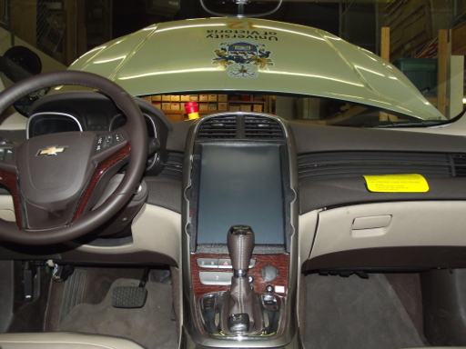
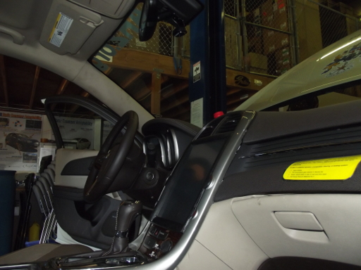
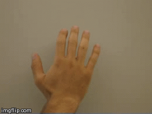
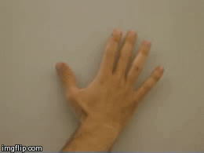
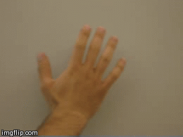

Discover Motion Inc
Make any USB connected webcam capable of recognizing basic hand-gestures. 'NAME' uses skin color filtering, shape recognition, and background subtraction to provide an API that can control vehicular infotainment systems.


Gesture Recognition
Motion Inc's powerful graphics engine can recognize gestures such as swiping, panning, zooming, and rotating. Our flexible API can be extended to more complex gestures as well.

Swiping

Panning

Zooming

Rotating
Graphics Engine
- Skin Colour Filtering:Filtering is done by compiling a range of colours present in the operator's hand and removing the background which is not in the colour range.
- Shape Recognition:Once the skin colour has been detected, the shape of hand can be recognized using fingerpoints and contours.
- Background Subtraction:By taking a static background image, new objects are detected more easily and the background can be subtracted out.
Open Source API
An API is available which notifies other programs of events when gestures have been detected. It is based on Qt's signals and slots mechanism which allows a program to define a slot which is connected to our event signals.